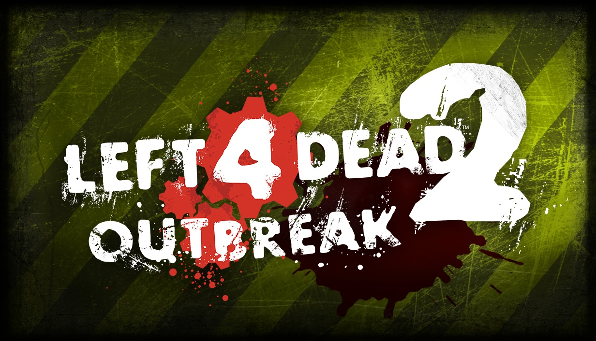

OUTBREAK TEAM IS ONLY AFFILIATED WITH VALVE CORPORATION TO THE SOLE EXTENT OF STEAM DISTRIBUTION.
LEFT 4 DEAD 2: OUTBREAK IS A LICENSED FAN-MADE MOD THAT REQUIRES YOU TO OWN LEFT 4 DEAD 2 ON STEAM.
ALL INTELLECTUAL PROPERTY BELONGS TO VALVE AND IS MODIFIED FOR FEATURES AND 64-BIT WITH EXTREME CARE.

Outbreak is Valve-licensed, fan-made, optional, non-commercial, forever-free 64-bit Steam Store Mod.
Outbreak is a Mod that requires the base L4D2 game to be owned and installed on Steam, and is only affiliated with Valve to the sole extent of Steam distribution.
Outbreak will NEVER be a "successor" and is NOT legally authorized to alter Valve's established IP (such as story, maps, and assets).
Outbreak exists as an optional Mod and upgrade path with an exclusive focus on technology, modding, quality-of-life, privacy, and security.
If you are expecting anything different from the above, you will be very disappointed.
What is Outbreak's history?
November 4, 2024 was Outbreak's official greenlight for code which sparked an initial 64-bit port to CS:GO’s engine branch.
It required 4 months of work from 5 Valve-Licensed Programmers to boot into a broken map. Outbreak's licensees are only authorized to write code, NOT story.
Over 2 years of private NDA development, we have fixed thousands of bugs to reach 1:1 gameplay/visual parity and backward compatibility with the base game.
Shaped by L4D2's long history of modders who are no longer active or have passed away, Outbreak treats even the smallest backward compatibility problem as a tragedy that must be fixed.
What engine is Outbreak based on?
Outbreak Engine is our own extensively modified, Long-Term Support (LTS) branch of CS:GO, that continues L4D2's tradition of being the outcast of Source Engine branches.
Features DirectX 11 and only 100% objective engine enhancements cherry-picked from the work of a larger external circle of Valve-Licensed Programmers.
Security and stability are always prioritized over feature creep. If a feature risks either, it is killed fast. Every change (like our unbashable CI fix) is Cvar'd and optional, FOREVER.
Outbreak favors the expansion of older systems such as sound caching instead of CS:GO's sound streaming to avoid major risks of compatibility and performance issues.
What are Outbreak's goals?
Preservation and extensibility with a strict "all or nothing" stance on backward compatibility, client-centric toggles, and another decade of Workshop support.
Outbreak will always remain strict about ensuring that all major changes and new features are opt-in, regardless of its status as the sole option for 64-bit L4D2.
Instead of adding new guns ourselves, we've opted to implement a framework for modders to make any new gun that they want. Old bugs are respected as features and optional fixes have Cvars.
This same philosophy will be followed for everything we do in the future and all player suggestions are held to that same expectation. This is a 17+ year old game that we all love in our own way.
How can I play Outbreak?
Outbreak will be slowly rolling out early access over the next year. For now, signing a Non-Disclosure Agreement (NDA) is required for builds and Discord server access.
As we are aiming for day-one SourceMod support to eliminate adoption friction, we are currently only seeking authors of prominent plugins and server hosts who have reach.
Can I join Outbreak Team?
Our scope is narrow and our goals are very specific. Programmer candidates require at least 2 years of relevant portfolio experience in traditional software engineering.
If you are a recognized security professional skilled in Source Engine network architecture and multiplayer, please reach out to help us maintain Outbreak Engine.
Random: Obscure Valve classic composed by Dejobaan's Ichiro
OUTBREAK TEAM IS ONLY AFFILIATED WITH VALVE CORPORATION TO THE SOLE EXTENT OF STEAM DISTRIBUTION.
LEFT 4 DEAD 2: OUTBREAK IS A LICENSED FAN-MADE MOD THAT REQUIRES YOU TO OWN LEFT 4 DEAD 2 ON STEAM.
ALL INTELLECTUAL PROPERTY BELONGS TO VALVE AND IS MODIFIED FOR FEATURES AND 64-BIT WITH EXTREME CARE.